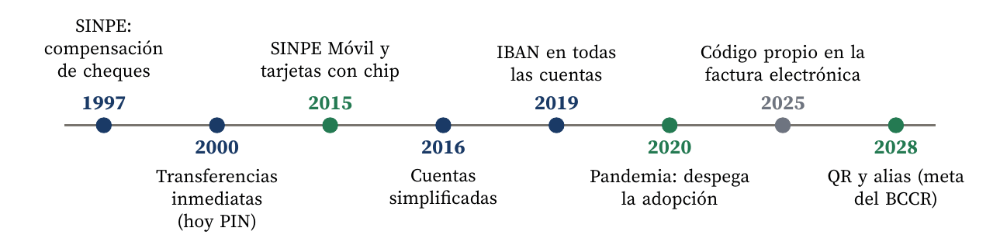
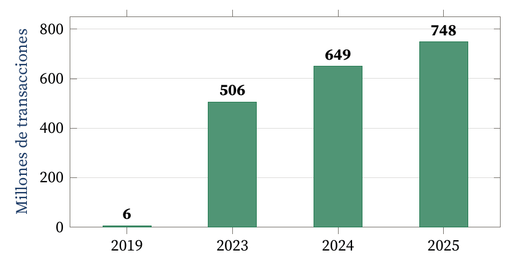
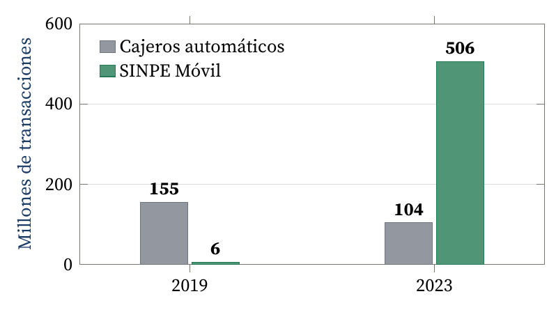

La tecnología consolidada no desapareció, pero ya no rinde igual
Carlos Luis Rojas Aragonés
En Costa Rica ya casi nadie pregunta «¿tiene efectivo?», sino «¿le hago un SINPE?». SINPE Móvil, la plataforma de pagos inmediatos del Banco Central de Costa Rica (BCCR), es un buen ejemplo de lo que plantea este foro: una tecnología innovadora con una cuota de mercado creciente que no reemplazó a las tecnologías consolidadas (el efectivo, el cajero automático, la transferencia bancaria tradicional y la tarjeta), pero sí comprometió su rendimiento. Todas siguen existiendo; ninguna rinde como antes.
La innovación no salió de la nada. El 17 de abril de 1997, el BCCR puso en marcha SINPE, el Sistema Nacional de Pagos Electrónicos (Banco Central de Costa Rica, s.f.). Su primer servicio fue la compensación de cheques, que hasta entonces tardaban en promedio 20 días en hacerse efectivos. Desde el año 2000 el sistema ofreció transferencias inmediatas, hoy llamadas PIN, pensadas para montos altos (Araujo et al., 2024). Para 2022, SINPE ya integraba 17 servicios y liquidaba cerca de 3600 millones de dólares diarios (Alvarado, 2022).
Sobre esa base, el 7 de mayo de 2015 nació SINPE Móvil: el cliente asocia su número de celular a una cuenta en colones y puede enviar dinero a cualquier banco conociendo solo el número del destinatario, gratis hasta ₡100 000 diarios. Al inicio, la curiosidad superó al uso: en las primeras seis semanas se inscribieron 117 287 usuarios, pero apenas se hicieron 1732 transacciones (TeleSemana, 2015). La Figura 1 resume los hitos.

Figura 1. Hitos de SINPE y de las reformas que lo acompañaron. Elaboración propia con base en Araujo et al. (2024), Banco Central de Costa Rica (2025a) y Arias (2026).
En 2019, SINPE Móvil registró apenas 6 millones de pagos. La pandemia lo cambió todo: con los confinamientos, muchos hogares lo usaron por primera vez para pagar comida y compras a domicilio, y a partir de ahí actuó el efecto red: entre más personas lo usaban, más razones tenían los demás para adoptarlo (Araujo et al., 2024). En 2023 hubo 506 millones de transacciones; en 2024, 648 millones (Banco Central de Costa Rica, 2025b), y en 2025, 747,5 millones por ₡12,53 billones (Rivero, 2026) (Figura 2).

Figura 2. Transacciones anuales de SINPE Móvil. Elaboración propia con datos de Araujo et al. (2024), Banco Central de Costa Rica (2025b) y Rivero (2026).
La penetración es igual de llamativa. En 2024, más del 76 % de los mayores de 15 años eran usuarios activos, cada uno con unas 180 transacciones al año, y Costa Rica ocupaba el cuarto lugar mundial en pagos rápidos por habitante, detrás de PromptPay en Tailandia, Pix en Brasil y Swish en Suecia. El valor promedio de cada pago bajó a unos ₡16 900, señal de que se usa para el gasto diario (Araujo et al., 2024). A mayo de 2026 había 4,8 millones de números inscritos, 1,29 por adulto (Ramírez, 2026), y entre enero y agosto de 2026 se acumulaban 446,1 millones de transacciones (Arias, 2026).
El efectivo y el cajero automático. El efectivo es el medio de pago más caro: en 2017 su manejo costó el equivalente al 1 % del PIB. Seguía reinando por dos razones: funciona siempre, para todos, tenga o no cuenta bancaria, y liquida al instante. SINPE Móvil le quitó justamente esa segunda ventaja. Los cajeros pasaron de 155 millones de transacciones en 2019 a 104 millones en 2023, mientras SINPE Móvil subía de 6 a 506 millones (Figura 3). El ahorro por usar menos efectivo se estima en un 0,5 % del PIB al año (Araujo et al., 2024).

Figura 3. Transacciones en cajeros automáticos y en SINPE Móvil en Costa Rica. Elaboración propia con datos de Araujo et al. (2024).
La transferencia bancaria tradicional. SINPE Móvil ya concentra cerca del 80 % de la cantidad de transferencias interbancarias, pero solo el 4 % de su valor (Araujo et al., 2024). Los montos grandes siguen viajando por los canales de siempre; lo que se perdió fue el volumen minorista.
La tarjeta. Es la que mejor resiste. En 2022 había más de 9,2 millones de tarjetas emitidas, el 99 % sin contacto, y cerca de 200 000 datáfonos (Alvarado, 2022). Su punto débil es el costo para el comercio: el BCCR fija un tope de comisión del 2 % por venta con tarjeta nacional, más hasta ₡12 500 mensuales por terminal (Madrigal, 2023). Para un pequeño comercio, recibir un SINPE Móvil gratis frente a pagar esa comisión es una diferencia directa en su margen.
El negocio de pagos de los bancos. Los bancos dejaron de cobrar comisiones por transferencias que ahora son gratuitas, pero el BIS encontró que sus gastos no financieros bajaron con respecto a un escenario simulado en el que SINPE Móvil no hubiera despegado. Además, cayó la concentración del mercado de pagos (Araujo et al., 2024). Es decir, perdieron una fuente de ingresos, pero ganaron eficiencia y enfrentan más competencia.
La Tabla 1 resume el patrón: la tecnología consolidada no muere, se repliega hacia los casos que la nueva no cubre.
| Tecnología consolidada | Lo que conserva | Lo que perdió |
|---|---|---|
| Efectivo y cajero | Personas sin cuenta o sin conexión estable | Un tercio de las operaciones en cajero (2019-2023) |
| Transferencia tradicional | El 96 % del valor transferido: los montos altos | Cerca del 80 % de la cantidad de transferencias |
| Tarjeta | Comercio en línea, crédito, turistas | Pagos pequeños entre personas y en el comercio pequeño |
| Bancos | La relación con el cliente y la cuenta | Comisiones por transferencia; menor concentración |
Tabla 1. Cómo quedó cada tecnología consolidada. Elaboración propia con base en Araujo et al. (2024) y Alvarado (2022).
El éxito trajo conflictos nuevos. Desde el 1 de setiembre de 2025, los comercios deben identificar los pagos con SINPE Móvil con un código propio en la factura electrónica. El BCCR aclaró que no es un impuesto, sino una medida de trazabilidad fiscal (Banco Central de Costa Rica, 2025a), pero el debate sobre si el sistema facilita la informalidad sigue abierto (Rivero, 2026). Además, el propio BIS advierte que hay personas con menos habilidades digitales o con conexión inestable que seguirán prefiriendo el efectivo (Araujo et al., 2024). Esa es, precisamente, la trinchera donde sobrevive la tecnología consolidada.
El volumen del BIS sobre pagos rápidos compara experiencias de América Latina y Asia (Aurazo et al., 2024). De ahí, y del caso costarricense, salen seis factores:
El BCCR prepara un SINPE Móvil con códigos QR (estáticos y con el monto incluido) y con alias, para no tener que compartir el número de teléfono. La idea es llevarlo al comercio físico, al comercio en línea y al pago de servicios públicos, con 2028 como referencia. El número de teléfono y el SMS se mantendrán, y las comisiones todavía se estudian a la luz de Brasil e India (Arias, 2026). Si eso ocurre, el próximo terreno en disputa será el datáfono.
Les dejo dos preguntas: cuando SINPE Móvil llegue a la caja del comercio, ¿la tarjeta correrá la misma suerte que el cajero? Y en sus países, ¿quién está impulsando los pagos inmediatos: el banco central o el sector privado?
Alvarado, J. (2022, 29 de noviembre). «Estamos logrando lo que queríamos: reemplazar el efectivo», celebra el Banco Central. El Observador. https://observador.cr/estamos-logrando-lo-que-queriamos-reemplazar-el-efectivo-celebra-el-banco-central/
Araujo, D., Cantú, C., Chinchilla, A., Franco, C., Frost, J. y Oconitrillo, A. (2024). Fast payments and banking: Costa Rica's SINPE Móvil. En J. Aurazo, J. Frost y A. Kosse (Eds.), Faster digital payments: Global and regional perspectives (BIS Papers n.º 152, pp. 45-60). Bank for International Settlements. https://www.bis.org/publications/paper-152-faster-digital-payments-global-and-regional-perspectives.pdf
Arias, J. P. (2026, 20 de agosto). Banco Central prepara Sinpe Móvil con QR y alias para reducir pagos en efectivo. El Observador. https://observador.cr/banco-central-prepara-sinpe-movil-con-qr-y-alias-para-reducir-pagos-en-efectivo/
Aurazo, J., Cantú, C., Frost, J., Kosse, A. y Velasquez, C. (2024). A revolution in digital payments: Faster, user-friendlier and cheaper. En J. Aurazo, J. Frost y A. Kosse (Eds.), Faster digital payments: Global and regional perspectives (BIS Papers n.º 152, pp. 3-16). Bank for International Settlements. https://www.bis.org/publications/paper-152-faster-digital-payments-global-and-regional-perspectives.pdf
Banco Central de Costa Rica. (s.f.). Payments system: General information. https://www.bccr.fi.cr/en/payments-system/general-information
Banco Central de Costa Rica. (2025a, 26 de agosto). SINPE Móvil no sufrirá cambios relacionados con temas tributarios (CP-BCCR-031-2025). https://www.bccr.fi.cr/cr/es/noticias/listado-de-noticias/2025/sinpe-movil-no-sufrira-cambios-relacionados-con-temas-tributarios.html
Banco Central de Costa Rica. (2025b, 30 de abril). Usuarios de SINPE Móvil que cambien su número de teléfono celular deben reportarlo a su entidad financiera (CP-BCCR-017-2025). https://www.bccr.fi.cr/content/dam/bccr/noticias/2025/2025-04-30-cp-bccr-017-2025-usuarios-sinpe-movil-deben-reportar-cambio-telefono-movil-asu-entidad-financiera-1.pdf
Cornelli, G., Frost, J., Gambacorta, L., Sinha, S. y Townsend, R. M. (2024). The organisation of digital payments in India: Lessons from the Unified Payments Interface (UPI). En J. Aurazo, J. Frost y A. Kosse (Eds.), Faster digital payments: Global and regional perspectives (BIS Papers n.º 152, pp. 61-73). Bank for International Settlements. https://www.bis.org/publications/paper-152-faster-digital-payments-global-and-regional-perspectives.pdf
Madrigal, L. M. (2023, 9 de febrero). Nuevo tope a comisiones por uso de datáfonos entra a regir el 12 de febrero. Delfino.cr. https://delfino.cr/2023/02/nuevo-tope-a-comisiones-por-uso-de-datafonos-entra-a-regir-el-12-de-febrero
Ramírez, A. (2026, 26 de junio). Transacciones por medio de Sinpe Móvil superaron los ₡12 billones durante 2025. CRHoy. https://crhoy.com/economia/transacciones-por-medio-de-sinpe-movil-superaron-los-%E2%82%A112-billones-durante-2025
Rivero, A. Z. (2026, 8 de julio). Hacienda va tras Sinpe Móvil con decreto que economistas consideran inútil. Semanario Universidad. https://semanariouniversidad.com/?p=385712
TeleSemana. (2015, 30 de junio). La billetera móvil del Banco Central de Costa Rica ya registra 117.287 usuarios. https://www.telesemana.com/blog/2015/06/30/la-billetera-movil-del-banco-central-de-costa-rica-ya-registra-117-287-usuarios/